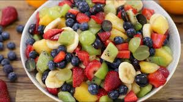

Resep masakan
Salad Buah

Bahan-bahan
- 250 gram Stroberi
- 250 gram Nanas
- 250 gram Blueberry
- 250 gram Anggur Merah
- 250 gram Kiwi
- 250 gram Jeruk mandarin
- 250 gram Pisang
- 1 sdm Madu
- 250 gram Lemon
Cara membuat
- Dalam baskom besar, gabungkan semua buah.
- Pukul bersama madu, kulit jeruk nipis, dan air jeruk nipis dalam baskom pencampur kecil.
- Tuang di atas buah dan aduk hingga rata sebelum disajikan.